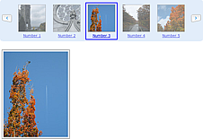

Latest - Version 1.0 - 10/21/2008
- Upgraded demos to use YUI 2.6.0.
- Retested on all browsers.
You can download the necessary files here:
Version 0.6.3 - 08/18/08
- Upgraded demos to use YUI 2.5.2.
- Removed extraneous includes for YUI library from demos.
- Retested on all browsers.
Version 0.6.2 - 02/23/08
- Upgraded demos to use YUI 2.5.0
- Fixed bug around calling scrollTo while the carousel is already scrolling. Or trying to reverse the scrolling in a different direction while the first animation is already in progress. Simplistic method. Just blocks and ignores any request to scroll if animation is already in progress.
- New property: disableSelection. Suggestion by Jenny Mok.
Specifies whether to turn off browser text selection within the carousel. Default is true.
If true, nothing inside the browser may be text selected. This prevents the ugly effect ofthe user accidentally clicking and starting a text selection for the elements in the carousel.
If false, selection is allowed. You might want to turn this on if you want the items within
a carousel to be selectable by the browser.
Version 0.6.1 - 07/08/07
- Bug Fix. loadNextHandler and loadPrevHandler got the wrong start, end values passed in certain cases. Now does the correct thing.
- Two new parameters: scrollBeforeAmount and scrollAfterAmount. These replace the firstItem parameter introduced in 0.6.0 but now removed. These support centering around a selected item (as in the spotlight example.) See the discussion in the properties documentation.
- Added new method: getFirstVisible to be symmetrical with the getLastVisible method. Exactly
the same as calling carousel.getProperty("firstVisible")
- More refinement on prebuilds skipping around (spotlight and tabset examples
Version 0.6.0 - 07/01/07
- AutoPlay now stops on previous event interaction (as it did with next)
- Prebuilds work better when skipping around (spotlight and tabset examples)
- Carousel now supports direct property setting. Instead of carousel.cfg.setProperty(prop, value) or carousel.cfg.getProperty(prop) you can now call carousel.setProperty(prop, value) or carousel.getProperty(prop).
- Fixed the autoplay example, had incorrect explanation of how to manage auto play (incorrectly illustrated changing properties)
- Fixed property management to correctly handle setting properties with the silent mode turned on. You can now set the size property (with silent=true) when inside a load handler.
New parameter: firstItem. Lets you set what the lower bounds of the carousel will be. Items are still loaded from 1 to n. But setting the firstItem to less than 1 will allow you to scroll past the first position. See the spotlight example for a good use of this parameter This has been replaced in 0.6.1 by 2 new parameters: scrollBeforeAmount and scrollAfterAmount.- New parameter: loadOnStart. Whether to call the loadInitHandler when the carousel is created. Default is true. If set to false, the carousel is created but no items loaded. Call carousel.load() to get the carousel loaded manually.
- Fixed several issues around reconfiguring properties and how it is handled in scrolling next & previous.
- New convenience method: getLastVisible(). Returns the last item visible.
- New convenience method: getFirstItemRevealed(). If carousel is revealing before & after items (revealAmount > 0), then returns the index of the item that is revealed before the firstVisible item. Will return -1 if no items are revealed or if the firstVisible is equal to 1 (nothing to reveal).
- New convenience method: getLastItemRevealed(). If carousel is revealing before & after items (revealAmount > 0), then returns the index of the item that is revealed after the last visible item. Will return -1 if no items are revealed or if the last visible item is equal to size (nothing to reveal).
- Fourth parameter to args array passed to loadInitHandler, loadNextHandler and loadPrevHandler no longer passes a boolean for whether reveal is turned on. This is trivial to determine and with the addition of the methods getFirstItemRevealed() and getLastItemRevealed() it is no longer needed.
Version 0.5.6 - 06/08/07
Resolved the IE vertical scroll issue where in certain cases the scrolling gets off by a few pixels at a time. This was due to an IE CSS bug that will add extra space below an LI. The fix was to set the LI style to contain the following.
float:left;
clear:left;
Version 0.5.5 - 06/05/07
Added new feature to allow the carousel to show a little bit of the before & after items in the list. For example, let's say that we are showing four items, 2-5. Specifying revealAmount:20 would show 2-5 and 20 pixels of item #1 and 20 pixels of item #6. This seems to bear out well in testing as a way to clue users that more content exists.
Caveats
- Endless scrolling is not working in Opera.
- While vertical revealed example works across all browsers, it is odd that in IE6 and IE7 that you can construct an example with just an img and it will be off by a few pixels during scrolling. For some reason vertical LIs with images add some buffer margin that I can seem to find the source of nor fetch the value of it to account for it. The vertical scrolling demo does however work across all browsers.
Version 0.5.1 - 06/03/07

Created a spotlight/preview example which caused me to add an additional parameter to the addItem
method. The fourth optional parameter is a style class to associate with the LI item. (four arguments passed in the args array)
Version 0.5.0 - 06/01/07
In this release I have rewritten parts of the size calculation algorithms. Thanks to Claude Jones, Yahoo!;
Ave Wrigley, itn.co.uk; Michael Dowling for all pointing out various issues with that section of the code.
The focus has been on making sure that vertical carousels behave correctly.
Here were the issues I worked through.
- When using 'auto' for margins, the size calculation would fail in IE getting a value of NaN.
Now the calculateSize() method will default back to zero for margins on IE that are set to 'auto'.
- calculateSize() invoked offsetHeight on the LI element. In certain unusual cases in IE6 this would
cause IE to crash. It appears that it had to do with auto values being explicitly set. But I was
never able to fully determine the exact cause. The work around was to try the style.height
first, then default back to the offsetHeight.
- On FF, if no style.height was specified, FF would often have a fractional height calculated for the LI
(e.g., "93.2px"). Since I was using offsetHeight (which would return 93), scrolling vertically
would get off by some fractional value (which by the way was extremely annoying ;-). Now
calculateSize() will get the style.height and use parseFloat to pull out a fractional value if it
exists. This will be the case on FF if the style.height is not explicitly set and if it happens
to fall on a fractional boundary.
- calculateSize() was not taking into account the padding & margin for the UL that holds the LI items.
The method now correctly adds these values when calculating the clip height for vertical carousels.
- When loading dynamic content, it was tricky to get the carousel to handle the height correctly.
Even with a recalculate it was inconsistent in behavior. The simplest solution is to specify a
height directly in the CSS which coupled with the overflow:hidden being set for vertical carousels
causes the carousel to calculate height & scroll amounts correctly.
- Cleaned up the carousel.css to more accurately comment/reflect how each style contributes to
the carousel display. One change is for vertical LIs, the overflow:hidden is set (so that
vertical height will be respected [clipped to height, so that all heights can be the same]).
- Cleaned up CSS in example code to more accurately reflect these changes.
- Deprecated the method getCarouselItem(). It is now called getItem(). The getCarouselItem() will be maintained for several releases to maintain backward compatibility.
From a developer's perspective here are the things to keep in mind with this new release:
- For vertical carousels, explicitly set the style.width and the style.height in the CSS.
Setting the style.height will avoid the fractional issue (which the code
can now handle); will cause IE to not crash since offsetHeight will not be used; will guarantee
that a height will be set even for a dynamically loaded carousel.
- For horizontal carousels, explicitly set the style.width. Setting the style.height is optional.
- Vertical carousel height will now clip to the height set. In carousel.css the overflow:hidden has
been turned on by default.
- Change calls to getCarouselItem() to getItem() to be consistent with the new name. getCarouselItem() will however continue to work for the forseeable future for backward compatibility
Other changes:
- Added links to view the source for getTrips.php on the demo pages that use this php
to fetch trips from the Trip Planner API. This is just for instructional purposes since
many have asked to see this code.
- Upgraded all examples to use the latest akamai versions of the latest YUI library
- Cleaned up examples to pass HTML validation -- with the exception of the HTML for the carousel <ul></ul> being empty on all dynamic examples.
- Cleaned up documentation, updated to reflect changes and changed over to yui.css to be similar to YUI docs.
- Cleaned up the Scrolling Modules example to work correctly across all browsers.
Version 0.4.0 - 01/28/07
The biggest changes in this release are the full support of runtime configuration
of the carousel component, the addition of support for show, hide and recalculating size and
updated documentation.
- Support added for runtime configuration of carousel. You can now call carousel.setProperty() to
configure the various properties of the carousel. See the documentation on the list of properties for which properties can
be set after the carousel is created.
- nextElementID and prevElementID are now deprecated. Use nextElement and prevElement instead.
The name change was made to more accurately reflect that both IDs or the element
objects could be passed. In addition, the documentation was updated to show that one or more
ids or objects could be passed as the nextElement or prevElement (allowing multiple elements to
control next/previous operation). prevElementID and nextElementID will be maintained as part of the
ongoing API for backward compatibility (they map to prevElement and nextElement properties).
- Added show() method. Sets display to block (making carousel visible) and recalculating size of carousel based on current configuration and contents. This allows you toggle the visibility of the carousel and still have it calculate its size correctly (before the calculations could occur while the carousel was hidden making all the calculations incorrect). Thanks to Bram Whillock for the idea for this addition.
- Added hide() method. Sets display to none (making carousel hidden).
- Added calculateSize() method. Recalculates the size of the carousel based on current configuration and contents.
- addItem() now accepts either a string of HTML or an actual element object. Thanks to Guy Katz for the idea & sample code.
- Documentation updated for FAQ
Version 0.3.6 - 12/13/06
- Bug Fix: AutoPlay. Multiple registrations of autoplay back to back did not work as designed. Only one autoplay should be in operation at once. Fixed startAutoPlay to correctly set its autoPlayTimer to new value.
Version 0.3.5 - 12/09/06
- carousel.addItem() now returns the item it added.
- Updated autoplay example to illustrate adding rollovers, see carousel_dhtml_load.html
Version 0.3.4 - 11/28/06
- Upgraded & tested against YUI library version 0.12.0.
- Each thumbnail now links to a larger photo image (always possible,
just illustrating this technique) in carousel_dhtml_load.html
Version 0.3.3 - 10/30/06
- Fixed bug found is several of the demos that should have loaded the [0] element to [n-1] but instead loaded the [1] element to [n].
Version 0.3.2 - 10/20/06
- carousel.js fully commented
- Minified & Gzipped versions of Carousel now available
Version 0.3.1 - 9/22/06
- Exposed firstVisible as a property. This allows the initial position of the carousel to be set. Others had tried to invoke moveTo during the loadInitHandler, however this did not work (thanks Daniel Sims for pointing this out.)
- New example: Carousel Offset illustrates this.
- Carousel now uses the minified versions of the Y!UI library.
Version 0.3.0 - 8/15/06
- Fixed bug (thanks Steve Yates for pointing this out!) in module tabsets. Now on a moveTo or scrollTo, in-between elements are pre-built as placeholders correctly. There was a bug in the way this was done before. This keeps items in the correct order.
- reload() now also resets the carousel.size back to the original size set at creation time.
Version 0.2.9 - 8/14/06
- reload() now takes an optional numVisible parameter. Also, the carousel.js was updated to recalcuate its size on reload. This allows carousels to resize when loading new content (if desired). (Thanks to Chris Maxwell for the idea.)
- Added new demo that illustrates resize (from 4 to 6) during reload. See Ajax Vertical Search example.
Version 0.2.8 - 8/11/06
- clear() method. Clears all items from the list and resets the carousel back to initial state just prior to initial load.
- reload() method. Clears all items from the list and calls the initLoadHandler to load a new set of items.
- Illustrated in the Manage Carousel Items example
- Additional example created: Ajax Search
- Thanks for the idea from Tony Hirst.
- Fixed bug with view source for IE & Safari.
Version 0.2.7 - 8/10/06
- Oops! Quick fix to 0.2.6. Had a fatal bug that broke lots of examples. Too much in a hurry. This version fixes that.
Version 0.2.6 - 8/9/06
- animationCompleteHandler added to provide a way to be notified when the animation for a next/previous
navigation is finished.
- Added to the Carousel Slides example: demonstration of showing which slide you are currently on and
adding a message when animation completes.
- Thanks for the idea from David Ehlers.
Version 0.2.5 - 8/2/06
- Support for loading out of order (for asynchronous loading). Thanks to Yuval Karjevski.
- Ability to insert items anywhere in the list. insertBeforeItem() and insertAfterItem(). Thanks to Dan Hobbs for the reference implementation this version is built from.
- Cleaned up API, internal methods now start with _ (underscore)
- Added comments to all demos.
- Added a View Source link to all demos to make the source viewable (in a simpler manner.)
- Cleaned up some JSLint issues in the various demos.
- Re-organized the demo links and rewrote the overview section for the component.
- Added more information on various demo pages to explain how to implement the demo.
Version 0.2.4 - 7/21/06
- Added a little more logic to startAutoPlay() to not kick off another timer
if the timer is already active.
- startAutoPlay(interval) - Added an optional interval to set for autoplay.
Version 0.2.3 - 7/19/06
- autoPlay - configuration parameter added to set the amount of time before automatically scrolling in the next set of content.
- startAutoPlay() - starts autoplay manually.
- stopAutoPlay() - stops autoplay manually.
- wrap() - turns on wrapping for bounded carousels.
Version 0.2.2 - 7/15/06
- Tested against the latest YDN 0.11.0 Version of the Y!UI Library. No changes required.
- Y!UI Library packaged with zip.
Version 0.2.1 - 7/06/06
- scrollTo(itemNum) - Provides a way to directly
set the item to scrollTo.
- moveTo(itemNum) - Provides a way to directly set the item to move to.
Ignores animation speed and just performs a single move operation.
- Added examples showing carousel as a news module scroller and
as a way to implement tabsets.
Version 0.2.0 - 7/06/06
- orientation - The Carousel can now support up/down scrolling of vertical content
as well as left/right scrolling of horizontal content.
- nextElementID and prevElementID - Previously, the next and
previous elements were identified by using a specific class, carousel-prev and
carousel-next. This technique has been deprecated. However, if the nextElementID
and the prevElementID are not specified, then the Carousel will attempt to find
elements with these classnames within the html structure of the component. This
change was made to allow the prev/next controls to be more fully externalized
from the component.
- Expected Markup - The expected markup has been simplified and relaxed.
The prev/next elements do not have to be part of the carousel markup.
- Removed thumbnailWidth and thumbnailHeight have
been removed. The carousel is now more intelligent about pulling padding, margins,
and size from the components themselves (based on style sheet settings).
- carousel.css simplified. Only the required classes are included in the
carousel.css. Other classes that may be of interest are listed in the file
comments.
Version 0.1.3 - 6/28/06
- animationMethod - New attribute to specify the animation method (e.g., YAHOO.util.Easing.easeOut, YAHOO.util.Easing.easeBoth.
- Changed carousel.css to have all styles scoped to .carousel-component (and corresponding js code to support this).
- scrollNext() - Convenience method that causes content to be scrolled left (next).
- scrollPrev() - Convenience method that causes content to be scrolled right (prev).
- Setting animationSpeed to 0 turns off all animation.
- Added third argument to calls to loadNextHandler and loadPrevHandler. The alreadyCached is passed as arg[2]. It indicates whether the load request is for items that are already cached.
- Adjusted examples to illustrate the above.
Version 0.1.2 - 6/27/06
- Fixed bug when scrolling content causing duplicate elements to be created in certain conditions
- Fixed bug that caused new scroll parameters to be ignored.
- Added 'size' attribute. See documentation (and example) below.
- Added 'nextButtonStateHandler' attribute. See documentation (and example) below.
- Added demo for bounded size
- Added demo for static content